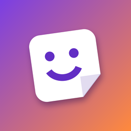

StickarooSupport
Fragen, Probleme oder Ideen? Schreib einfach eine E-Mail an laurijkurtz@gmail.com – ich melde mich so schnell wie möglich.
Hilfreich sind: dein iPhone-Modell, die iOS-Version und eine kurze Beschreibung, was du gemacht hast. Bei Problemen mit einem Import gerne auch einen Screenshot.
Häufige Fragen
Wie importiere ich meine Sticker-Sammlung?
Öffne die Sticker-Sammlung in der anderen App so, dass alle gewünschten Sticker vollständig zu sehen sind. Starte im Kontrollzentrum die Bildschirmaufnahme, warte ein paar Sekunden, ohne zu scrollen, und stoppe sie. Wähle die Aufnahme dann in Stickaroo unter „Erstellen → Sammlung importieren“ aus. Ein Screenshot funktioniert auch – dann werden alle Sticker statisch.
Einige Sticker wurden nicht erkannt.
Sticker, die am Bildrand nur halb zu sehen sind, werden bewusst übersprungen. Scroll vor der Aufnahme so, dass alle gewünschten Sticker ganz sichtbar sind, und scrolle während der Aufnahme nicht. Am zuverlässigsten klappt es im hellen Modus.
Ein animierter Sticker ist nur ein Standbild geworden.
Stickaroo erkennt Animationen an der Bewegung während der Aufnahme. Nimm etwas länger auf (5–10 Sekunden), damit auch langsame Animationen erkannt werden. Bei einem Screenshot werden alle Sticker statisch.
WhatsApp nimmt mein Pack nicht an.
Ein Pack braucht mindestens 3 und höchstens 30 Sticker, und statische und animierte Sticker müssen in getrennten Packs sein – Stickaroo achtet darauf automatisch. Stelle außerdem sicher, dass WhatsApp auf dem neuesten Stand ist.
Nach erneutem Hinzufügen habe ich ein Pack doppelt.
WhatsApp legt beim erneuten Hinzufügen ein weiteres Pack an. Das alte kannst du in WhatsApp unter Sticker → Meine Sticker löschen.
Ich habe Pro gekauft, aber es ist nicht aktiv.
Öffne in Stickaroo die Einstellungen (Zahnrad im Reiter „Packs“) und tippe auf „Käufe wiederherstellen“. Pro gilt auf allen Geräten mit derselben Apple-ID und kann per Familienfreigabe geteilt werden.
Wie lösche ich meine Daten?
Alle Sticker und Packs liegen nur auf deinem iPhone. Du kannst sie einzeln in der App löschen – oder die App entfernen, dann ist alles weg. Mehr dazu in der Datenschutzerklärung.
Support
Questions, problems or ideas? Just send an email to laurijkurtz@gmail.com – I'll get back to you as soon as possible.
Helpful details: your iPhone model, iOS version and a short description of what you did. For import problems, a screenshot helps too.
Frequently asked questions
How do I import my sticker collection?
Open the sticker collection in the other app so that all the stickers you want are fully visible. Start a screen recording in Control Center, wait a few seconds without scrolling, then stop it. Then pick the recording in Stickaroo under “Create → Import collection”. A screenshot works too – then all stickers become static.
Some stickers weren't detected.
Stickers that are only half visible at the edge of the screen are skipped on purpose. Before recording, scroll so that all the stickers you want are fully visible, and don't scroll during the recording. It works most reliably in light mode.
An animated sticker turned into a still image.
Stickaroo detects animations by their movement during the recording. Record a bit longer (5–10 seconds) so slow animations are detected too. With a screenshot, all stickers become static.
WhatsApp doesn't accept my pack.
A pack needs at least 3 and at most 30 stickers, and static and animated stickers must be in separate packs – Stickaroo takes care of this automatically. Also make sure WhatsApp is up to date.
After adding a pack again, I have it twice.
WhatsApp creates another pack when you add it again. You can delete the old one in WhatsApp under Stickers → My stickers.
I bought Pro, but it isn't active.
Open Settings in Stickaroo (gear icon in the “Packs” tab) and tap “Restore purchases”. Pro works on all devices with the same Apple ID and can be shared via Family Sharing.
How do I delete my data?
All stickers and packs are stored only on your iPhone. You can delete them individually in the app – or remove the app, and everything is gone. See the privacy policy for details.